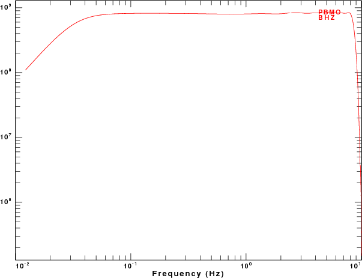
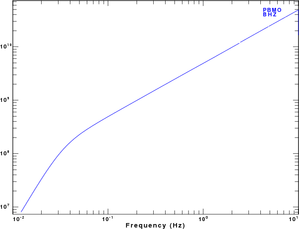
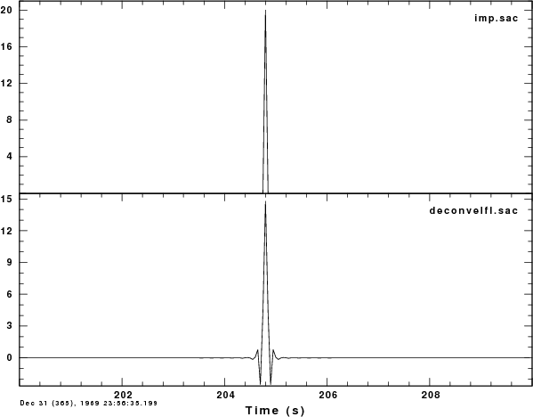
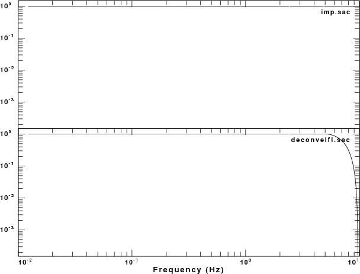

When ordering a SEED volume from IRIS, the contents will be both the waveform as well as the data defining the station and instrument. This latter part is called dataless SEED. Normally, I would unpack the volume with the rdseed command
rdseed -f SEED_VOLUME -R -d -o 1
which will give the response in the RESP format, and dump the traces in SAC format. It is also possible to get the network dataless SEED files such as PBMOout.seed
If you desire to have the response file in the SEED RESP format for use with the program evalresp, execute the command
rdseed -f PBMOout.seed -R
which then produces the RESP files with the naming convention RESP.NETWORK.STATION.LOCATION.COMPONENT:
RESP.NM.PBMO..BHE RESP.NM.PBMO..BHN RESP.NM.PBMO..BHZ RESP.NM.PBMO..HHE RESP.NM.PBMO..HHN RESP.NM.PBMO..HHZ RESP.NM.PBMO..LHE RESP.NM.PBMO..LHN RESP.NM.PBMO..LHZ
The RESP files provide the complete response as stages, starting with ground motion, sensor, digitizer, through all digital filtering. This file is a complete physical description of the response.
To use the RESP file to define the instrument response, the utility program evalresp is used:
evalresp STATION_NAME COMPONENT_NAME YEAR DAY_OF_YEAR FMIN FMAX NFREQ -u 'vel' -f RESPFILE
where STATION_NAME is the station code, COMPONENT_NAME is the component. YEAR and DAY_OF_YEAR are used to get the response for a given day, since the RESP file can provide the complete instrument history of a station/component. FMIN, FMAX and NFREQ tell evalresp to create tables of frequency-amplitude and frequency-phase with NFREQ values between FMIN and FMAX. The argument of the -u flag indicates the desired units for the table. If the argument is DIS, the response will be COUNTS per METER input ground displacement. If the argument is VEL, the response is COUNTS per METER/SEC input ground velocity. If the argument is ACC, the response is COUNTS per METER/SEC/SEC input ground acceleration.
For the sample dataless SEED given above, the command
evalresp PBMO BHZ 2007 292 0.001 10 500 -u 'vel' -f RESP.NM.PBMO..BHZ
creates the files
AMP.NM.PBMO..BHZ PHASE.NM.PBMO..BHZ
If you prefer to have the response file as a SAC polezero file, the command will be
rdseed -f PBMOout.seed -p
which will produce the following files when using rdseed (version 4.7.5):
SAC_PZs_NM_PBMO_BHE__2007.173.00.00.00.0000_99999.9999.24.60.60.99999 SAC_PZs_NM_PBMO_BHN__2007.173.00.00.00.0000_99999.9999.24.60.60.99999 SAC_PZs_NM_PBMO_BHZ__2007.173.00.00.00.0000_99999.9999.24.60.60.99999 SAC_PZs_NM_PBMO_HHE__2007.173.00.00.00.0000_99999.9999.24.60.60.99999 SAC_PZs_NM_PBMO_HHN__2007.173.00.00.00.0000_99999.9999.24.60.60.99999 SAC_PZs_NM_PBMO_HHZ__2007.173.00.00.00.0000_99999.9999.24.60.60.99999 SAC_PZs_NM_PBMO_LHE__2007.173.00.00.00.0000_99999.9999.24.60.60.99999 SAC_PZs_NM_PBMO_LHN__2007.173.00.00.00.0000_99999.9999.24.60.60.99999 SAC_PZs_NM_PBMO_LHZ__2007.173.00.00.00.0000_99999.9999.24.60.60.99999
The polezero files for seismic sensors created by rdseed from the SEED volume, provides the transfer function from ground displacement in units of METERS to COUNTS. For the BHZ channel, the contents are
ZEROS 5 867.0800 904.7790 867.0800 -904.7790 POLES 4 -0.1480 0.1480 -0.1480 -0.1480 -314.1590 202.3190 -314.1590 -202.3190 CONSTANT 7.028933e+07
It is possible to annotate this file, since sac2000 and gsac permit a leading * to act as a comment:
* **** * STATION (KSTNM ): PBMO * COMPONENT (KCMPNM): HHE * LOCATION (KHOLE ): * NETWORK (KNETWK): NM * START : 2007,173,00:00:00.0000 * END : No Ending Time * INPUT : METERS * OUTPUT : COUNTS * **** ZEROS 5 867.0800 904.7790 867.0800 -904.7790 POLES 4 -0.1480 0.1480 -0.1480 -0.1480 -314.1590 202.3190 -314.1590 -202.3190 CONSTANT 7.101501e+07
We can use gsac to present the amplitude spectra of the responses:
gsac << EOF ##### # create an impulse with unit area ##### fg impulse delta 0.05 npts 8192 w imp.sac r imp.sac ch KSTNM PBMO ch KCMPNM BHZ wh ##### # obtain the velocity sensitivity ##### transfer from none to eval subtype AMP.NM.PBMO..BHZ PHASE.NM.PBMO..BHZ w velcount.sac fft bg plt color list red psp fmin 0.01 fmax 20 plotnps -F7 -W10 -EPS -K < P001.PLT > respplot.eps convert -trim respplot.eps respplt.png ##### # obtain the displacement sensitivity ##### r imp.sac transfer from none to polezero subtype SAC_PZs_NM_PBMO_BHZ__2007.173.00.00.00.0000_99999.9999.24.60.60.99999 w discount.sac fft color list blue psp fmin 0.01 fmax 20 plotnps -F7 -W10 -EPS -K < P002.PLT > pzplot.eps convert -trim pzplot.eps pzplt.png quit EOF
The amplitude response can be viewed
|

|
|

|
Removing the instrument response must be done carefully because real data will have noise and dividing by the low response at high or low frequencies will enhance the noise. The safe way to do this is to apply a bandpass filter as part of the deconvolution.
Consider the output due to an impulse in ground velocity, which is created by the gsac commands:
r imp.sac transfer from none to eval subtype AMP.NM.PBMO..BHZ PHASE.NM.PBMO..BHZ w velcount.sac
This transfer function removes both the high and low frequencies, as seen from the plot above.
If there is noise added to the recording that is not related to the instrument, then removal of the instrument will enhance that noise. To remove the instrument response, the following is a safe procedure:
#####
# define the frequency limits for deconvolution
#####
DELTA=`saclhdr -DELTA velcount.sac`
FHH=`echo $DELTA | awk '{print 0.50/$1}' `
FHL=`echo $DELTA | awk '{print 0.25/$1}' `
#####
# now try a deconvolution with the FREQLIMITS
#####
gsac << EOF
r velcount.sac
transfer from eval subtype AMP.NM.PBMO..BHZ PHASE.NM.PBMO..BHZ to none freqlimits 0.005 0.01 ${FHL} ${FHH}
w deconvelfl.sac
quit
EOFNote that this automatically adjusts for the sample rate (DELTA) to compute the Nyquist frequency (FHH). the result will be a bandpass filtered version of the desired ground motion:
|

|

|
Last changed October 19, 2007